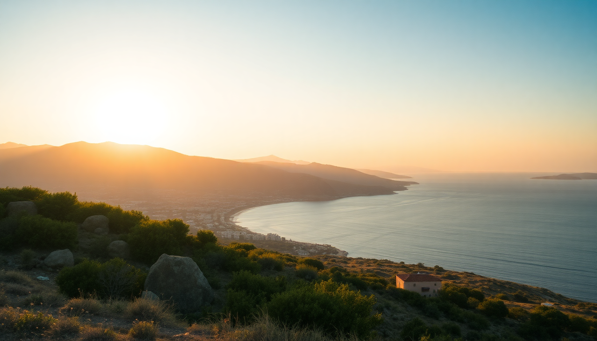

Where to Stay in Crete: Best Areas for Every Budget

I spent three weeks driving the length of Crete, sleeping in six different beds, and learning the hard way that where you stay defines your entire trip. The island is 160 miles long—that’s longer than the distance from London to Paris—so picking one base and doing day trips doesn’t work. You need to choose a home for each leg. Here’s what I found after sleeping in everything from a €30 pension in Matala to a splurge suite in Elounda.
Why Should You Split Your Stay Between Chania and Heraklion?
Crete is two islands in one. The western half around Chania feels like a Venetian postcard with mountain backdrops. The eastern half around Heraklion is grittier, more archaeological, and closer to the beaches that package tourists flock to. Trying to see both from a single hotel room means spending four hours a day in the car.
I recommend at least three nights in Chania and two in Heraklion. If you have a week, add a third base in the south (Matala or Plakias) for beach time. The drive from Chania to Heraklion takes about two hours on the new national road, but that’s without traffic and without stopping for the beach at Georgioupolis.
What’s the Best Area to Stay in Chania on a Mid-Range Budget?
Chania’s old town is a maze of narrow alleys, Turkish fountains, and harbor-front seafood joints. It’s gorgeous and it’s loud. We stayed at Casa Delfino Hotel & Spa, a converted 17th-century Venetian mansion tucked a block off the harbor. The rooms have stone walls and wooden ceilings, and the rooftop terrace gives you a view of the lighthouse without the bar noise until 2 AM.
For mid-range, skip the harborfront rooms. They’re overpriced and you’ll hear every scooter and tour group. Instead, look at Kydonia or Splanzia neighborhoods—ten-minute walks to the water, half the price. We ate dinner twice at To Stachi, a tiny family-run place on Sifaka Street that does a lamb with honey and thyme that ruined all other lamb for me.
If you’re on a tight budget, Pension Maria on Theotokopoulou Street is clean, basic, and €40 a night. No frills, but you’re steps from the market hall.
Is Heraklion Worth Staying In, or Should You Skip It?
Heraklion gets a bad rap. It’s a working city with traffic, concrete apartment blocks, and a port that feels industrial. I almost skipped it. Don’t. The Heraklion Archaeological Museum holds the actual Minoan artifacts from Knossos—the originals, not the reproductions—and it’s one of the best museums in Greece. You need two hours minimum.
For hotels, I stayed at GDM Megaron, a historic building right on the waterfront. The rooftop pool overlooks the old Venetian fortress, and the rooms are soundproofed against the city noise. It’s pricey (around €150 a night), but you’re walking distance to everything. Budget travelers should try Lato Boutique Hotel on Epimenidou Street—similar location, half the price, smaller rooms.
The real trick is where to eat. Skip the tourist traps along 25th August Street. Walk five minutes inland to Peskesi, a restaurant that sources everything from Cretan farms. The dakos (barley rusk with tomato and mizithra cheese) is the best I had on the island.
Where Should Families or Beach Lovers Stay in Crete?
If you’re traveling with kids or just want a beach that doesn’t require a 20-minute hike, skip the north coast resorts (Hersonissos, Malia) unless you want British-style party strips. Instead, head to Elounda on the east coast. It’s sheltered, calm water, and upscale without being stuffy.
We spent two nights at Elounda Beach Hotel & Villas, which has private beach cabanas and a saltwater pool that blends into the sea. It’s expensive—€250+ a night—but if you’re splitting between Chania and here, it balances out. For mid-range, Porto Elounda Mare is next door and €100 less per night.
For a raw, wild beach experience, drive south to Matala. The beach is famous for the caves where hippies lived in the 1960s (Joni Mitchell wrote “Carey” about it). Stay at Matala View Rooms, a simple guesthouse with a balcony overlooking the bay. No pool, no AC that works well, but the sunset from the taverna across the street is worth the sweat.
What About Rethymno—Is It a Good Middle Ground?
Rethymno sits between Chania and Heraklion, and it’s the most underrated base on the island. The old town has a 16th-century fortress, a long sandy beach, and a vibe that’s quieter than Chania but more alive than Heraklion. We stopped for one night at Palazzino di Corina, a boutique hotel inside a restored Venetian palazzo. The host, Maria, brought us homemade raki and orange cake at check-in.
If you have a car, Rethymno works well as a hub for day trips to the Preveli Palm Beach (an hour south) or the Arkadi Monastery (40 minutes inland). The beach in town is fine—nothing special, but fine for a morning swim before exploring the fortress.
Budget option: Casa Vitae on Nikiforou Foka Street. Clean, central, €50 a night. No breakfast, but the bakery around the corner has spinach pies for €2.
Which Southern Beach Town Is Best for Relaxation?
Plakias or Matala. Pick based on your tolerance for tourists. Plakias is a long, curved beach with a few tavernas and no nightlife. We stayed at Plakias Bay Hotel, a family-run place with a pool and direct beach access. The rooms are dated (think 1990s tile), but the owners are lovely and the beach is empty by 5 PM when the day-trippers leave.
Matala is smaller, more scenic, and more crowded. The water is crystal clear, and the cliffs create a natural cove that blocks wind. I preferred Matala for the vibe—eating grilled octopus at Taverna Nikos while watching the sun drop behind the caves—but Plakias is better if you want quiet.
FAQ
Is it better to stay in Chania or Heraklion for a first visit? Chania. It’s prettier, more walkable, and has better food. Stay in Heraklion only if you’re obsessed with Minoan archaeology or need to catch an early ferry to Santorini. Three nights in Chania, two in Heraklion is the ideal split.
Can you stay in one place and drive to the other side of Crete? Technically yes, but you’ll waste half your trip on the road. The drive from Chania to the eastern tip (Sitia) takes three hours each way. Split your stay into two or three bases. The island is long, not wide.
What’s the best budget hotel under €50 a night? Pension Maria in Chania and Casa Vitae in Rethymno. Both are clean, central, and run by families. Skip the hostels in Malia unless you want to party—they’re cheap but loud.
Conclusion
- Split your stay between Chania (old town, food, culture) and Heraklion (museums, Knossos, logistics).
- For beach time, choose Elounda (upscale, calm) or Matala (scenic, casual).
- Rethymno is the best compromise if you don’t want to move bases.
- Book mid-range hotels in the Kydonia or Splanzia neighborhoods of Chania to avoid harbor noise.
- Always eat at Peskesi in Heraklion and To Stachi in Chania.